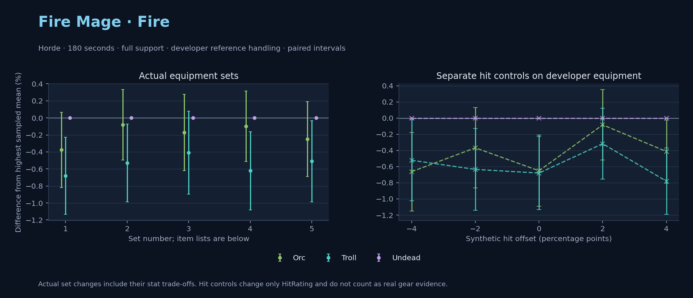

Horde · Orc / Troll / Undead

No pet or guardian appears in the reference combat metrics. Reference: Orc, developer equipment, 180 seconds and full support. Pet choices remain those of the developer build.
WoWSims developer · P1 Arcane
Unimplemented enchant or active set effects: [{"id": 181, "pieces": 2, "effects": ["+8 All Resistances."]}, {"id": 181, "pieces": 4, "effects": ["When struck in combat has a 2% chance of freezing the attacker in place for 3s. Can only occur once every 60 sec."]}]
180 seconds, full support and original developer references. Hit below is generic sheet melee / spell hit; school and talent bonuses can be attached directly to spells.
| Race | DPS | Gap and interval | Generic hit | Replay |
|---|---|---|---|---|
| Undead | 822.87 | +0.000% ± 0.000 | 2.9% / 2.9% | Native input · Website JSON |
| Orc | 819.78 | -0.375% ± 0.441 | 2.9% / 2.9% | Native input · Website JSON |
| Troll | 817.27 | -0.680% ± 0.452 | 2.9% / 2.9% | Native input · Website JSON |
| Slot | Item | ID | Enchant |
|---|---|---|---|
| Head | Magister's Crown | 16686 | |
| Neck | Gem of Trapped Innocents | 23057 | |
| Shoulder | Sorcerer's Mantle | 226936 | |
| Back | Drape of Vaulted Secrets | 21415 | |
| Chest | Magister's Robes | 16688 | |
| Wrist | Magister's Bindings | 16683 | |
| Hands | Magister's Gloves | 16684 | |
| Waist | Magister's Belt | 16685 | |
| Legs | Magister's Leggings | 16687 | |
| Feet | Magister's Boots | 16682 | |
| Ring 1 | Brilliant Watcher's Signet | 275982 | |
| Ring 2 | Ring of Entropy | 18543 | |
| Trinket 1 | Talisman of Ephemeral Power | 18820 | |
| Trinket 2 | Neltharion's Tear | 19379 | |
| Main hand | Grand Marshal's Mageblade | 23451 | |
| Off hand | Master Dragonslayer's Orb | 19366 | |
| Ranged / relic | Torch of Light | 279246 |
Published ranked alternatives · Published pre-raid
Recorded source replacements: [{"slot": "ranged", "from": 11748, "to": 249237, "publishedAlternativeRank": 1, "publishedEpDelta": -2.2, "reason": "First published alternative compatible with the current WoWSims database, class, faction and occupied slots."}]
180 seconds, full support and original developer references. Hit below is generic sheet melee / spell hit; school and talent bonuses can be attached directly to spells.
| Race | DPS | Gap and interval | Generic hit | Replay |
|---|---|---|---|---|
| Undead | 854.97 | +0.000% ± 0.000 | 6.6% / 6.6% | Native input · Website JSON |
| Orc | 854.28 | -0.081% ± 0.412 | 6.6% / 6.6% | Native input · Website JSON |
| Troll | 850.44 | -0.530% ± 0.458 | 6.6% / 6.6% | Native input · Website JSON |
| Slot | Item | ID | Enchant |
|---|---|---|---|
| Head | Sorcerer's Crown | 226935 | Arcanum of Focus |
| Neck | Archlight Talisman | 15856 | Enchant Necklace - Spell Power |
| Shoulder | Mantle of the Timbermaw | 19050 | |
| Back | Arcanoweave Cloak | 272411 | |
| Chest | Sorcerer's Robes | 226932 | Mystic Rugged Armor Kit |
| Wrist | Runecloth Cuffs | 254123 | Enchant Bracer - Greater Spellpower |
| Hands | Sorcerer's Gauntlets | 226930 | Enchant Gloves - Minor Haste |
| Waist | Belt of the Archmage | 18405 | |
| Legs | Magister's Leggings | 16687 | Arcanum of Focus |
| Feet | Sorcerer's Sandals | 226931 | Mystic Rugged Armor Kit |
| Ring 1 | Blessed Band of Light | 272407 | |
| Ring 2 | Channeler's Ring | 272406 | |
| Trinket 1 | Weakness Analyzer | 272438 | |
| Trinket 2 | Rune of the Guard Captain | 19120 | |
| Main hand | Sageblade | 22383 | |
| Off hand | Spirit of Aquementas | 11904 | Enchant Off-Hand - Superior Intellect |
| Ranged / relic | Greater Eternal Wand | 249237 |
Published one-slot hit alternative · Published pre-raid
One source-listed alternative; at least 80% of the source slot score retained. Reported hit selects the contrast; only native stats determine simulation outcomes. This is an experimental combination, not an endorsed best set.
Recorded source replacements: [{"slot": "ranged", "from": 11748, "to": 249237, "publishedAlternativeRank": 1, "publishedEpDelta": -2.2, "reason": "First published alternative compatible with the current WoWSims database, class, faction and occupied slots."}]
180 seconds, full support and original developer references. Hit below is generic sheet melee / spell hit; school and talent bonuses can be attached directly to spells.
| Race | DPS | Gap and interval | Generic hit | Replay |
|---|---|---|---|---|
| Undead | 841.40 | +0.000% ± 0.000 | 5.6% / 5.6% | Native input · Website JSON |
| Orc | 839.95 | -0.173% ± 0.448 | 5.6% / 5.6% | Native input · Website JSON |
| Troll | 837.97 | -0.408% ± 0.488 | 5.6% / 5.6% | Native input · Website JSON |
| Slot | Item | ID | Enchant |
|---|---|---|---|
| Head | Sorcerer's Crown | 226935 | Arcanum of Focus |
| Neck | Archlight Talisman | 15856 | Enchant Necklace - Spell Power |
| Shoulder | Mantle of the Timbermaw | 19050 | |
| Back | Arcanoweave Cloak | 272411 | |
| Chest | Sorcerer's Robes | 226932 | Mystic Rugged Armor Kit |
| Wrist | Runecloth Cuffs | 254123 | Enchant Bracer - Greater Spellpower |
| Hands | Gloves of Spell Mastery | 14146 | Enchant Gloves - Minor Haste |
| Waist | Belt of the Archmage | 18405 | |
| Legs | Magister's Leggings | 16687 | Arcanum of Focus |
| Feet | Sorcerer's Sandals | 226931 | Mystic Rugged Armor Kit |
| Ring 1 | Blessed Band of Light | 272407 | |
| Ring 2 | Channeler's Ring | 272406 | |
| Trinket 1 | Weakness Analyzer | 272438 | |
| Trinket 2 | Rune of the Guard Captain | 19120 | |
| Main hand | Sageblade | 22383 | |
| Off hand | Spirit of Aquementas | 11904 | Enchant Off-Hand - Superior Intellect |
| Ranged / relic | Greater Eternal Wand | 249237 |
Published ranked alternatives · Published pre-raid
Recorded source replacements: [{"slot": "shoulder", "from": 227808, "to": 19050, "publishedAlternativeRank": 1, "publishedEpDelta": -10.7, "reason": "First published alternative compatible with the current WoWSims database, class, faction and occupied slots."}, {"slot": "waist", "from": 228190, "to": 18405, "publishedAlternativeRank": 1, "publishedEpDelta": -12.6, "reason": "First published alternative compatible with the current WoWSims database, class, faction and occupied slots."}]
180 seconds, full support and original developer references. Hit below is generic sheet melee / spell hit; school and talent bonuses can be attached directly to spells.
| Race | DPS | Gap and interval | Generic hit | Replay |
|---|---|---|---|---|
| Undead | 862.58 | +0.000% ± 0.000 | 6.8% / 6.8% | Native input · Website JSON |
| Orc | 861.73 | -0.098% ± 0.413 | 6.8% / 6.8% | Native input · Website JSON |
| Troll | 857.22 | -0.621% ± 0.459 | 6.8% / 6.8% | Native input · Website JSON |
| Slot | Item | ID | Enchant |
|---|---|---|---|
| Head | Sorcerer's Crown | 226935 | Arcanum of Focus |
| Neck | Archlight Talisman | 15856 | Enchant Necklace - Spell Power |
| Shoulder | Mantle of the Timbermaw | 19050 | |
| Back | Arcanoweave Cloak | 272411 | |
| Chest | Robe of the Archmage | 14152 | Mystic Rugged Armor Kit |
| Wrist | Runecloth Cuffs | 254123 | Enchant Bracer - Greater Spellpower |
| Hands | Sorcerer's Gauntlets | 226930 | Enchant Gloves - Minor Haste |
| Waist | Belt of the Archmage | 18405 | |
| Legs | Magister's Leggings | 16687 | Arcanum of Focus |
| Feet | Sorcerer's Sandals | 226931 | Mystic Rugged Armor Kit |
| Ring 1 | Blessed Band of Light | 272407 | |
| Ring 2 | Channeler's Ring | 272406 | |
| Trinket 1 | Weakness Analyzer | 272438 | |
| Trinket 2 | Frozen Heart of the Mountain | 249469 | |
| Main hand | Sageblade | 22383 | |
| Off hand | Spirit of Aquementas | 11904 | Enchant Off-Hand - Superior Intellect |
| Ranged / relic | Brilliant Wand | 249385 |
Published one-slot hit alternative · Published pre-raid
One source-listed alternative; at least 80% of the source slot score retained. Reported hit selects the contrast; only native stats determine simulation outcomes. This is an experimental combination, not an endorsed best set.
Recorded source replacements: [{"slot": "shoulder", "from": 227808, "to": 19050, "publishedAlternativeRank": 1, "publishedEpDelta": -10.7, "reason": "First published alternative compatible with the current WoWSims database, class, faction and occupied slots."}, {"slot": "waist", "from": 228190, "to": 18405, "publishedAlternativeRank": 1, "publishedEpDelta": -12.6, "reason": "First published alternative compatible with the current WoWSims database, class, faction and occupied slots."}]
180 seconds, full support and original developer references. Hit below is generic sheet melee / spell hit; school and talent bonuses can be attached directly to spells.
| Race | DPS | Gap and interval | Generic hit | Replay |
|---|---|---|---|---|
| Undead | 857.80 | +0.000% ± 0.000 | 5.8% / 5.8% | Native input · Website JSON |
| Orc | 855.65 | -0.251% ± 0.441 | 5.8% / 5.8% | Native input · Website JSON |
| Troll | 853.43 | -0.510% ± 0.477 | 5.8% / 5.8% | Native input · Website JSON |
| Slot | Item | ID | Enchant |
|---|---|---|---|
| Head | Sorcerer's Crown | 226935 | Arcanum of Focus |
| Neck | Archlight Talisman | 15856 | Enchant Necklace - Spell Power |
| Shoulder | Mantle of the Timbermaw | 19050 | |
| Back | Arcanoweave Cloak | 272411 | |
| Chest | Robe of the Archmage | 14152 | Mystic Rugged Armor Kit |
| Wrist | Runecloth Cuffs | 254123 | Enchant Bracer - Greater Spellpower |
| Hands | Gloves of Spell Mastery | 14146 | Enchant Gloves - Minor Haste |
| Waist | Belt of the Archmage | 18405 | |
| Legs | Magister's Leggings | 16687 | Arcanum of Focus |
| Feet | Sorcerer's Sandals | 226931 | Mystic Rugged Armor Kit |
| Ring 1 | Blessed Band of Light | 272407 | |
| Ring 2 | Channeler's Ring | 272406 | |
| Trinket 1 | Weakness Analyzer | 272438 | |
| Trinket 2 | Frozen Heart of the Mountain | 249469 | |
| Main hand | Sageblade | 22383 | |
| Off hand | Spirit of Aquementas | 11904 | Enchant Off-Hand - Superior Intellect |
| Ranged / relic | Brilliant Wand | 249385 |
The same declared pool is available to every race. Each race keeps its best validation-sample set with its screening-selected racial policy. Separate samples confirm that choice, with fresh precision samples near the practical-loss boundary. Gaps use the highest sampled mean under that same duration, support and reference treatment as their reference. A zero reference gap does not certify a race; the main matrix also allows uncertainty in the leader.
| Pool | Seconds | Support | References | Race | DPS | Gap and interval | Racial policies / mana | Selected set | Generic hit: melee / spell | Replay |
|---|---|---|---|---|---|---|---|---|---|---|
| published-pre-raid | 60 | full | developer | Troll | 908.44 | +0.000% ± 0.00020,000 iterations | oncd / developer / developerMana waits 0.0s | published-mage-fire-horde-8f18bd15a7d5311c | 6.8% / 6.8% | Input · Result · Stats |
| published-pre-raid | 60 | full | developer | Orc | 899.94 | -0.935% ± 0.11220,000 iterations | developer / developer / developerMana waits 0.0s | published-mage-fire-horde-8f18bd15a7d5311c | 6.8% / 6.8% | Input · Result · Stats |
| published-pre-raid | 60 | full | developer | Undead | 895.71 | -1.401% ± 0.12620,000 iterations | developer / developer / developerMana waits 0.0s | published-mage-fire-horde-8f18bd15a7d5311c | 6.8% / 6.8% | Input · Result · Stats |
| published-pre-raid | 60 | full | explicit | Troll | 908.44 | +0.000% ± 0.00020,000 iterations | oncd / developer / developerMana waits 0.0s | published-mage-fire-horde-8f18bd15a7d5311c | 6.8% / 6.8% | Input · Result · Stats |
| published-pre-raid | 60 | full | explicit | Orc | 899.94 | -0.935% ± 0.11220,000 iterations | developer / developer / developerMana waits 0.0s | published-mage-fire-horde-8f18bd15a7d5311c | 6.8% / 6.8% | Input · Result · Stats |
| published-pre-raid | 60 | full | explicit | Undead | 895.71 | -1.401% ± 0.12620,000 iterations | developer / developer / developerMana waits 0.0s | published-mage-fire-horde-8f18bd15a7d5311c | 6.8% / 6.8% | Input · Result · Stats |
| published-pre-raid | 60 | self | developer | Troll | 798.48 | +0.000% ± 0.00020,000 iterations | oncd / developer / developerMana waits 0.0s | published-mage-fire-horde-8f18bd15a7d5311c-lower-hit | 5.8% / 5.8% | Input · Result · Stats |
| published-pre-raid | 60 | self | developer | Orc | 792.53 | -0.744% ± 0.12420,000 iterations | developer / developer / developerMana waits 0.0s | published-mage-fire-horde-8f18bd15a7d5311c | 6.8% / 6.8% | Input · Result · Stats |
| published-pre-raid | 60 | self | developer | Undead | 786.15 | -1.544% ± 0.12920,000 iterations | developer / developer / developerMana waits 0.0s | published-mage-fire-horde-8f18bd15a7d5311c-lower-hit | 5.8% / 5.8% | Input · Result · Stats |
| published-pre-raid | 60 | self | explicit | Troll | 798.48 | +0.000% ± 0.00020,000 iterations | oncd / developer / developerMana waits 0.0s | published-mage-fire-horde-8f18bd15a7d5311c-lower-hit | 5.8% / 5.8% | Input · Result · Stats |
| published-pre-raid | 60 | self | explicit | Orc | 792.53 | -0.744% ± 0.12420,000 iterations | developer / developer / developerMana waits 0.0s | published-mage-fire-horde-8f18bd15a7d5311c | 6.8% / 6.8% | Input · Result · Stats |
| published-pre-raid | 60 | self | explicit | Undead | 786.15 | -1.544% ± 0.12920,000 iterations | developer / developer / developerMana waits 0.0s | published-mage-fire-horde-8f18bd15a7d5311c-lower-hit | 5.8% / 5.8% | Input · Result · Stats |
| published-pre-raid | 180 | full | developer | Undead | 860.57 | +0.000% ± 0.00020,000 iterations | developer / developer / developerMana waits 0.0s | published-mage-fire-horde-8f18bd15a7d5311c | 6.8% / 6.8% | Input · Result · Stats · Website JSON |
| published-pre-raid | 180 | full | developer | Orc | 859.24 | -0.155% ± 0.09620,000 iterations | developer / developer / developerMana waits 0.0s | published-mage-fire-horde-8f18bd15a7d5311c | 6.8% / 6.8% | Input · Result · Stats · Website JSON |
| published-pre-raid | 180 | full | developer | Troll | 856.24 | -0.504% ± 0.10120,000 iterations | oncd / developer / developerMana waits 0.0s | published-mage-fire-horde-8f18bd15a7d5311c | 6.8% / 6.8% | Input · Result · Stats · Website JSON |
| published-pre-raid | 180 | full | explicit | Undead | 860.57 | +0.000% ± 0.00020,000 iterations | developer / developer / developerMana waits 0.0s | published-mage-fire-horde-8f18bd15a7d5311c | 6.8% / 6.8% | Input · Result · Stats |
| published-pre-raid | 180 | full | explicit | Orc | 859.24 | -0.155% ± 0.09620,000 iterations | developer / developer / developerMana waits 0.0s | published-mage-fire-horde-8f18bd15a7d5311c | 6.8% / 6.8% | Input · Result · Stats |
| published-pre-raid | 180 | full | explicit | Troll | 856.24 | -0.504% ± 0.10120,000 iterations | oncd / developer / developerMana waits 0.0s | published-mage-fire-horde-8f18bd15a7d5311c | 6.8% / 6.8% | Input · Result · Stats |
| published-pre-raid | 180 | self | developer | Undead | 705.95 | +0.000% ± 0.00020,000 iterations | developer / developer / developerMana waits 3.8s | published-mage-fire-horde-945f52603631cd24 | 6.6% / 6.6% | Input · Result · Stats |
| published-pre-raid | 180 | self | developer | Orc | 705.75 | -0.029% ± 0.09820,000 iterations | developer / developer / developerMana waits 4.0s | published-mage-fire-horde-945f52603631cd24 | 6.6% / 6.6% | Input · Result · Stats |
| published-pre-raid | 180 | self | developer | Troll | 701.73 | -0.598% ± 0.10620,000 iterations | oncd / developer / developerMana waits 4.9s | published-mage-fire-horde-945f52603631cd24 | 6.6% / 6.6% | Input · Result · Stats |
| published-pre-raid | 180 | self | explicit | Undead | 705.95 | +0.000% ± 0.00020,000 iterations | developer / developer / developerMana waits 3.8s | published-mage-fire-horde-945f52603631cd24 | 6.6% / 6.6% | Input · Result · Stats |
| published-pre-raid | 180 | self | explicit | Orc | 705.75 | -0.029% ± 0.09820,000 iterations | developer / developer / developerMana waits 4.0s | published-mage-fire-horde-945f52603631cd24 | 6.6% / 6.6% | Input · Result · Stats |
| published-pre-raid | 180 | self | explicit | Troll | 701.73 | -0.598% ± 0.10620,000 iterations | oncd / developer / developerMana waits 4.9s | published-mage-fire-horde-945f52603631cd24 | 6.6% / 6.6% | Input · Result · Stats |
| published-pre-raid | 300 | full | developer | Undead | 860.61 | +0.000% ± 0.00020,000 iterations | developer / developer / developerMana waits 0.7s | published-mage-fire-horde-8f18bd15a7d5311c | 6.8% / 6.8% | Input · Result · Stats |
| published-pre-raid | 300 | full | developer | Orc | 858.63 | -0.231% ± 0.07120,000 iterations | developer / developer / developerMana waits 0.7s | published-mage-fire-horde-8f18bd15a7d5311c | 6.8% / 6.8% | Input · Result · Stats |
| published-pre-raid | 300 | full | developer | Troll | 858.38 | -0.260% ± 0.07420,000 iterations | oncd / developer / developerMana waits 1.2s | published-mage-fire-horde-8f18bd15a7d5311c | 6.8% / 6.8% | Input · Result · Stats |
| published-pre-raid | 300 | full | explicit | Undead | 860.61 | +0.000% ± 0.00020,000 iterations | developer / developer / developerMana waits 0.7s | published-mage-fire-horde-8f18bd15a7d5311c | 6.8% / 6.8% | Input · Result · Stats |
| published-pre-raid | 300 | full | explicit | Orc | 858.63 | -0.231% ± 0.07120,000 iterations | developer / developer / developerMana waits 0.7s | published-mage-fire-horde-8f18bd15a7d5311c | 6.8% / 6.8% | Input · Result · Stats |
| published-pre-raid | 300 | full | explicit | Troll | 858.38 | -0.260% ± 0.07420,000 iterations | oncd / developer / developerMana waits 1.2s | published-mage-fire-horde-8f18bd15a7d5311c | 6.8% / 6.8% | Input · Result · Stats |
| published-pre-raid | 300 | self | developer | Undead | 571.57 | +0.000% ± 0.0005,000 iterations | developer / developer / developerMana waits 78.6s | published-mage-fire-horde-945f52603631cd24 | 6.6% / 6.6% | Input · Result · Stats |
| published-pre-raid | 300 | self | developer | Orc | 568.94 | -0.460% ± 0.2115,000 iterations | developer / developer / developerMana waits 79.6s | published-mage-fire-horde-945f52603631cd24 | 6.6% / 6.6% | Input · Result · Stats |
| published-pre-raid | 300 | self | developer | Troll | 564.25 | -1.281% ± 0.2175,000 iterations | oncd / developer / developerMana waits 81.8s | published-mage-fire-horde-945f52603631cd24 | 6.6% / 6.6% | Input · Result · Stats |
| published-pre-raid | 300 | self | explicit | Undead | 571.57 | +0.000% ± 0.0005,000 iterations | developer / developer / developerMana waits 78.6s | published-mage-fire-horde-945f52603631cd24 | 6.6% / 6.6% | Input · Result · Stats |
| published-pre-raid | 300 | self | explicit | Orc | 568.94 | -0.460% ± 0.2115,000 iterations | developer / developer / developerMana waits 79.6s | published-mage-fire-horde-945f52603631cd24 | 6.6% / 6.6% | Input · Result · Stats |
| published-pre-raid | 300 | self | explicit | Troll | 564.25 | -1.281% ± 0.2175,000 iterations | oncd / developer / developerMana waits 81.8s | published-mage-fire-horde-945f52603631cd24 | 6.6% / 6.6% | Input · Result · Stats |
| developer-reference | 60 | full | developer | Troll | 859.97 | +0.000% ± 0.00020,000 iterations | oncd / developer / developerMana waits 0.0s | developer | 2.9% / 2.9% | Input · Result · Stats |
| developer-reference | 60 | full | developer | Orc | 857.45 | -0.293% ± 0.12120,000 iterations | developer / developer / developerMana waits 0.0s | developer | 2.9% / 2.9% | Input · Result · Stats |
| developer-reference | 60 | full | developer | Undead | 853.67 | -0.732% ± 0.14320,000 iterations | developer / developer / developerMana waits 0.0s | developer | 2.9% / 2.9% | Input · Result · Stats |
| developer-reference | 60 | full | explicit | Troll | 859.97 | +0.000% ± 0.00020,000 iterations | oncd / developer / developerMana waits 0.0s | developer | 2.9% / 2.9% | Input · Result · Stats |
| developer-reference | 60 | full | explicit | Orc | 857.45 | -0.293% ± 0.12120,000 iterations | developer / developer / developerMana waits 0.0s | developer | 2.9% / 2.9% | Input · Result · Stats |
| developer-reference | 60 | full | explicit | Undead | 853.67 | -0.732% ± 0.14320,000 iterations | developer / developer / developerMana waits 0.0s | developer | 2.9% / 2.9% | Input · Result · Stats |
| developer-reference | 60 | self | developer | Troll | 756.74 | +0.000% ± 0.00020,000 iterations | oncd / developer / developerMana waits 0.0s | developer | 2.9% / 2.9% | Input · Result · Stats |
| developer-reference | 60 | self | developer | Orc | 754.52 | -0.293% ± 0.12020,000 iterations | developer / developer / developerMana waits 0.0s | developer | 2.9% / 2.9% | Input · Result · Stats |
| developer-reference | 60 | self | developer | Undead | 749.16 | -1.002% ± 0.14120,000 iterations | developer / developer / developerMana waits 0.0s | developer | 2.9% / 2.9% | Input · Result · Stats |
| developer-reference | 60 | self | explicit | Troll | 756.74 | +0.000% ± 0.00020,000 iterations | oncd / developer / developerMana waits 0.0s | developer | 2.9% / 2.9% | Input · Result · Stats |
| developer-reference | 60 | self | explicit | Orc | 754.52 | -0.293% ± 0.12020,000 iterations | developer / developer / developerMana waits 0.0s | developer | 2.9% / 2.9% | Input · Result · Stats |
| developer-reference | 60 | self | explicit | Undead | 749.16 | -1.002% ± 0.14120,000 iterations | developer / developer / developerMana waits 0.0s | developer | 2.9% / 2.9% | Input · Result · Stats |
| developer-reference | 180 | full | developer | Undead | 821.10 | +0.000% ± 0.00020,000 iterations | developer / developer / developerMana waits 0.0s | developer | 2.9% / 2.9% | Input · Result · Stats · Website JSON |
| developer-reference | 180 | full | developer | Orc | 818.52 | -0.313% ± 0.10120,000 iterations | developer / developer / developerMana waits 0.0s | developer | 2.9% / 2.9% | Input · Result · Stats · Website JSON |
| developer-reference | 180 | full | developer | Troll | 814.64 | -0.786% ± 0.10420,000 iterations | oncd / developer / developerMana waits 0.0s | developer | 2.9% / 2.9% | Input · Result · Stats · Website JSON |
| developer-reference | 180 | full | explicit | Undead | 821.10 | +0.000% ± 0.00020,000 iterations | developer / developer / developerMana waits 0.0s | developer | 2.9% / 2.9% | Input · Result · Stats |
| developer-reference | 180 | full | explicit | Orc | 818.52 | -0.313% ± 0.10120,000 iterations | developer / developer / developerMana waits 0.0s | developer | 2.9% / 2.9% | Input · Result · Stats |
| developer-reference | 180 | full | explicit | Troll | 814.64 | -0.786% ± 0.10420,000 iterations | oncd / developer / developerMana waits 0.0s | developer | 2.9% / 2.9% | Input · Result · Stats |
| developer-reference | 180 | self | developer | Undead | 683.20 | +0.000% ± 0.00020,000 iterations | developer / developer / developerMana waits 0.7s | developer | 2.9% / 2.9% | Input · Result · Stats |
| developer-reference | 180 | self | developer | Orc | 682.71 | -0.072% ± 0.10220,000 iterations | developer / developer / developerMana waits 0.8s | developer | 2.9% / 2.9% | Input · Result · Stats |
| developer-reference | 180 | self | developer | Troll | 680.29 | -0.427% ± 0.10520,000 iterations | developer / developer / developerMana waits 1.1s | developer | 2.9% / 2.9% | Input · Result · Stats |
| developer-reference | 180 | self | explicit | Undead | 683.20 | +0.000% ± 0.00020,000 iterations | developer / developer / developerMana waits 0.7s | developer | 2.9% / 2.9% | Input · Result · Stats |
| developer-reference | 180 | self | explicit | Orc | 682.71 | -0.072% ± 0.10220,000 iterations | developer / developer / developerMana waits 0.8s | developer | 2.9% / 2.9% | Input · Result · Stats |
| developer-reference | 180 | self | explicit | Troll | 680.29 | -0.427% ± 0.10520,000 iterations | developer / developer / developerMana waits 1.1s | developer | 2.9% / 2.9% | Input · Result · Stats |
| developer-reference | 300 | full | developer | Undead | 813.84 | +0.000% ± 0.00020,000 iterations | developer / developer / developerMana waits 0.0s | developer | 2.9% / 2.9% | Input · Result · Stats |
| developer-reference | 300 | full | developer | Orc | 810.00 | -0.472% ± 0.08220,000 iterations | developer / developer / developerMana waits 0.0s | developer | 2.9% / 2.9% | Input · Result · Stats |
| developer-reference | 300 | full | developer | Troll | 809.17 | -0.574% ± 0.08420,000 iterations | oncd / developer / developerMana waits 0.0s | developer | 2.9% / 2.9% | Input · Result · Stats |
| developer-reference | 300 | full | explicit | Undead | 813.84 | +0.000% ± 0.00020,000 iterations | developer / developer / developerMana waits 0.0s | developer | 2.9% / 2.9% | Input · Result · Stats |
| developer-reference | 300 | full | explicit | Orc | 810.00 | -0.472% ± 0.08220,000 iterations | developer / developer / developerMana waits 0.0s | developer | 2.9% / 2.9% | Input · Result · Stats |
| developer-reference | 300 | full | explicit | Troll | 809.17 | -0.574% ± 0.08420,000 iterations | oncd / developer / developerMana waits 0.0s | developer | 2.9% / 2.9% | Input · Result · Stats |
| developer-reference | 300 | self | developer | Undead | 571.34 | +0.000% ± 0.0005,000 iterations | developer / developer / developerMana waits 66.5s | developer | 2.9% / 2.9% | Input · Result · Stats |
| developer-reference | 300 | self | developer | Orc | 568.12 | -0.563% ± 0.2345,000 iterations | developer / developer / developerMana waits 67.5s | developer | 2.9% / 2.9% | Input · Result · Stats |
| developer-reference | 300 | self | developer | Troll | 563.13 | -1.437% ± 0.2345,000 iterations | developer / developer / developerMana waits 69.3s | developer | 2.9% / 2.9% | Input · Result · Stats |
| developer-reference | 300 | self | explicit | Undead | 571.34 | +0.000% ± 0.0005,000 iterations | developer / developer / developerMana waits 66.5s | developer | 2.9% / 2.9% | Input · Result · Stats |
| developer-reference | 300 | self | explicit | Orc | 568.12 | -0.563% ± 0.2345,000 iterations | developer / developer / developerMana waits 67.5s | developer | 2.9% / 2.9% | Input · Result · Stats |
| developer-reference | 300 | self | explicit | Troll | 563.13 | -1.437% ± 0.2345,000 iterations | developer / developer / developerMana waits 69.3s | developer | 2.9% / 2.9% | Input · Result · Stats |
180 seconds, full support and the developer equipment anchor. These checks test creature sensitivity without a full gear search.
| Target | References | Race | DPS | Gap and interval | Replay |
|---|---|---|---|---|---|
| beast | developer | Troll | 858.14 | +0.000% ± 0.000 | Input · Result |
| beast | developer | Undead | 822.87 | -4.109% ± 0.437 | Input · Result |
| beast | developer | Orc | 817.51 | -4.735% ± 0.360 | Input · Result |
| beast | explicit | Troll | 858.14 | +0.000% ± 0.000 | Input · Result |
| beast | explicit | Undead | 822.87 | -4.109% ± 0.437 | Input · Result |
| beast | explicit | Orc | 817.51 | -4.735% ± 0.360 | Input · Result |
| elemental | developer | Undead | 822.87 | +0.000% ± 0.000 | Input · Result |
| elemental | developer | Orc | 817.51 | -0.652% ± 0.440 | Input · Result |
| elemental | developer | Troll | 817.27 | -0.680% ± 0.452 | Input · Result |
| elemental | explicit | Undead | 822.87 | +0.000% ± 0.000 | Input · Result |
| elemental | explicit | Orc | 817.51 | -0.652% ± 0.440 | Input · Result |
| elemental | explicit | Troll | 817.27 | -0.680% ± 0.452 | Input · Result |
Some equipment has unimplemented enchant or set effects
These known-issue notes are source context. Runtime checks establish current cast coverage, including Mutilate. They do not prove every mechanic matches the game.